CARPET GRAND PRIX · ABNAHMEFASSUNG
Bahrain
Unter dem Bett.
Eine Schleife um den Bettpfosten, eine fahrbare Boxengasse, ein geordneter
Team-Paddock und Spielzeugfans unter weißen Tribünendächern. Diese Galerie
zeigt tatsächliche Spielaufnahmen.
Bahrain im Browser fahren →
Entwicklungsstand zur Prüfung, noch nicht in main übernommen. Im
heruntergeladenen Testpaket öffnet der Spielknopf die neue eigenständige
Rennfassung.
Vorher und nachher
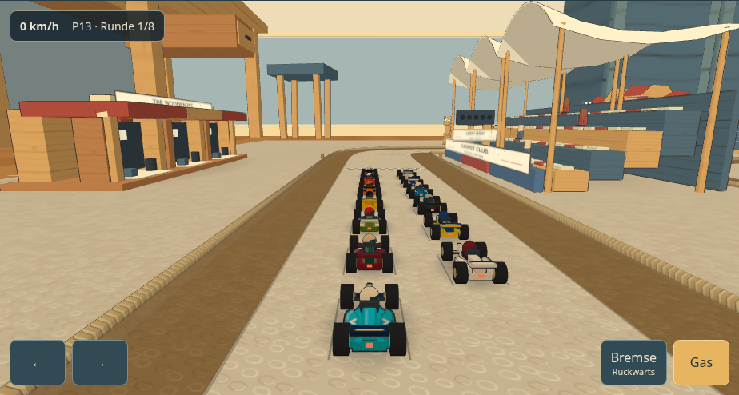
Veröffentlichter Zimmerstand vor Iteration 2
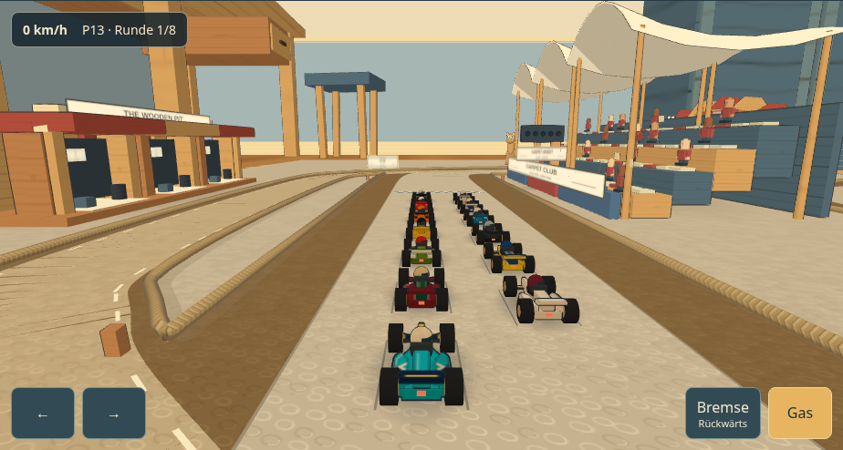
Iteration 2: Boxengasse und Tribünenfans
Die neue Schleife – echte POV-Fahrt
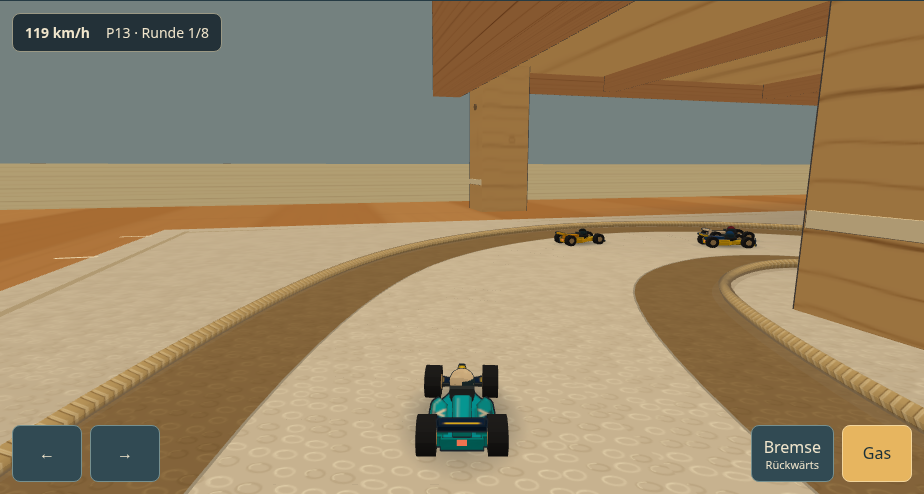
Einfahrt unter den Bettrahmen
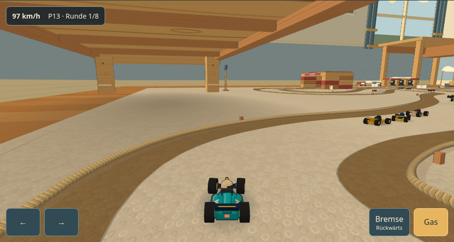
Kurve um den Bettpfosten
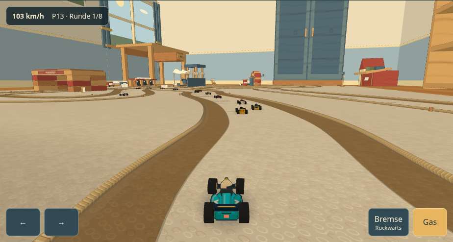
Zurück auf den offenen Teppich
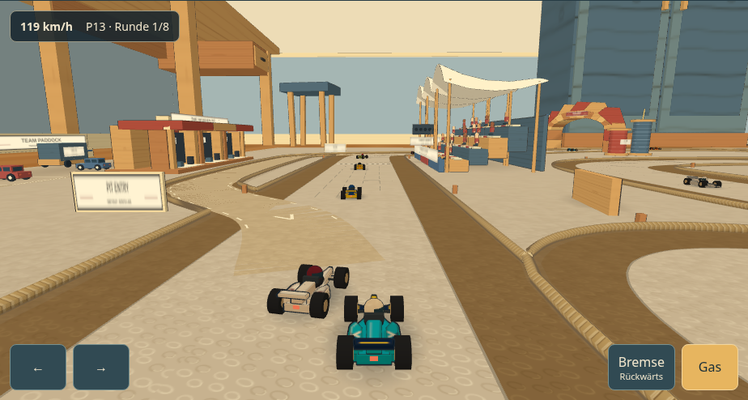
Kinderzimmer aus der Rennkamera
Durch die Boxengasse – echte Tastaturfahrt
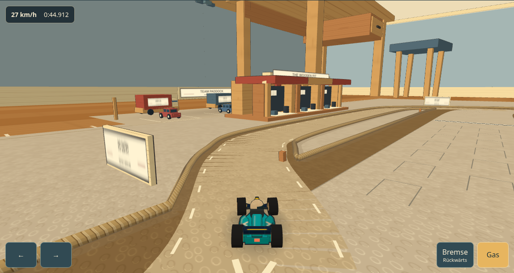
Offene Boxeneinfahrt
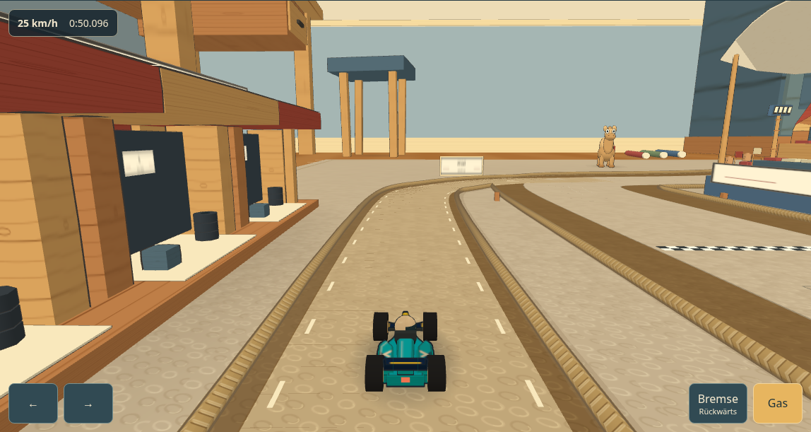
Parallel zur Start-/Zielgeraden
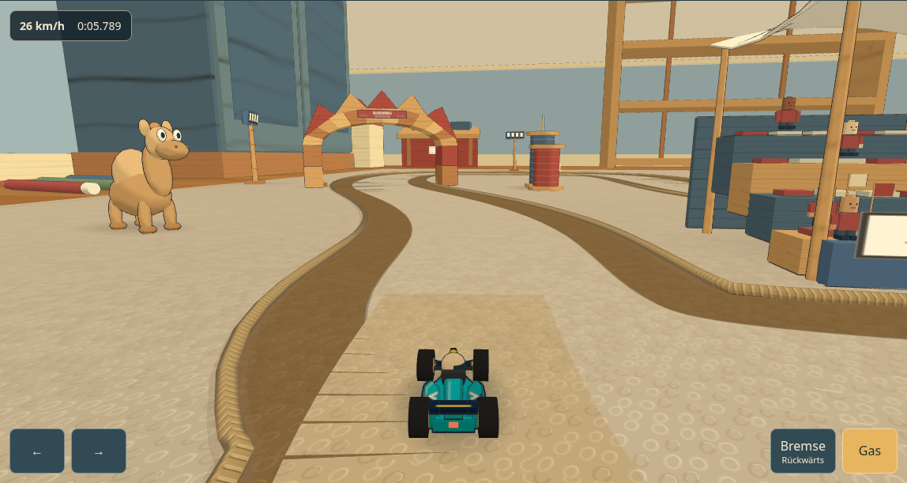
Offene Rückkehr auf die Rennstrecke
Paddock und Tribüne
Detailkamera auf die tatsächliche Spielszene. Fahrzeugpositionen und
Rennzustand wurden nicht verändert.
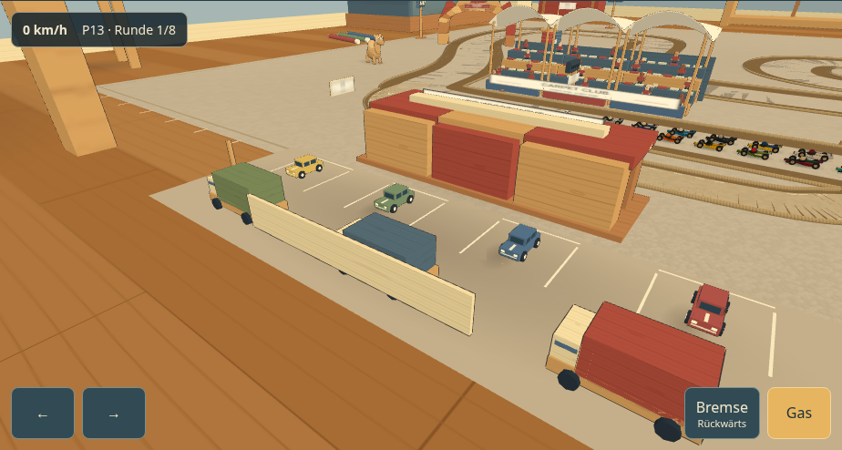
Vier Parkbuchten und drei Support-Transporter
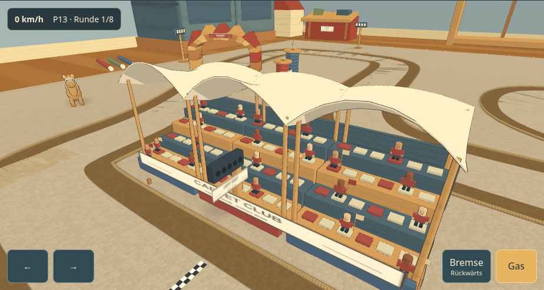
Spielzeugfans, Gesichter und Papierflaggen
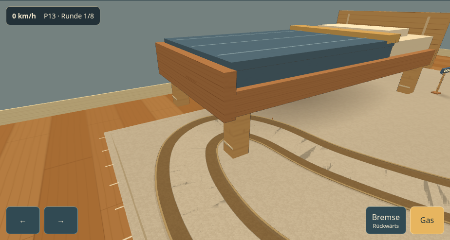
Die neue Strecke rund um den südlichen Bettpfosten
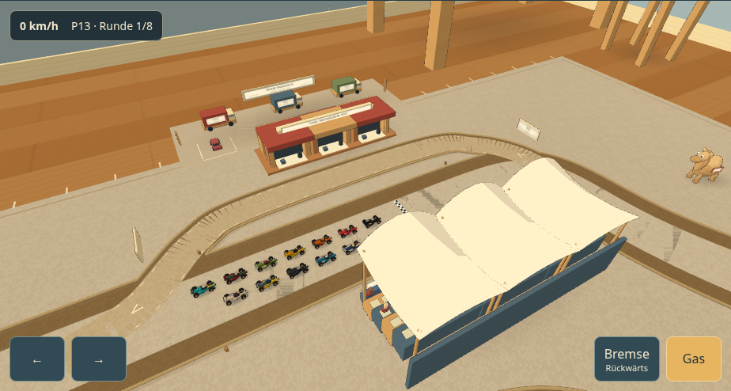
Start/Ziel und paralleler Boxenweg
Übersicht des Kinderzimmers
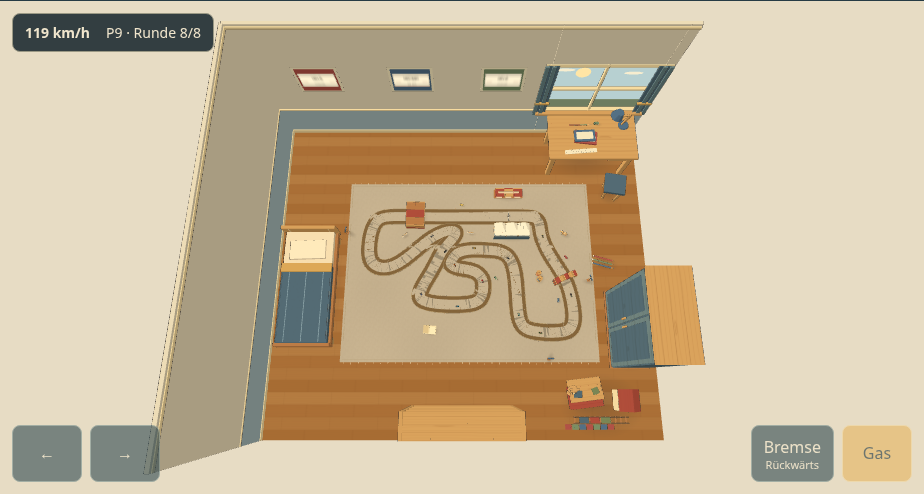
Vorher: veröffentlichte Raumaufteilung
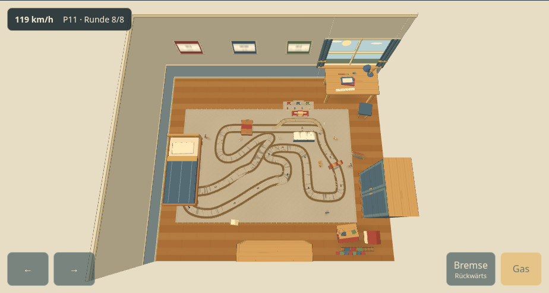
Nachher: Unterbett-Schleife, Boxengasse und Paddock
Mobilformat
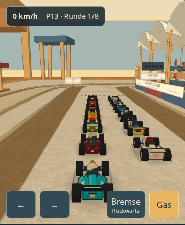
Startfeld und Tribüne
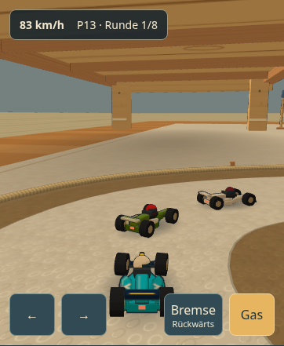
Unterbett-Passage
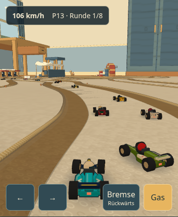
Ausfahrt aus dem Schatten
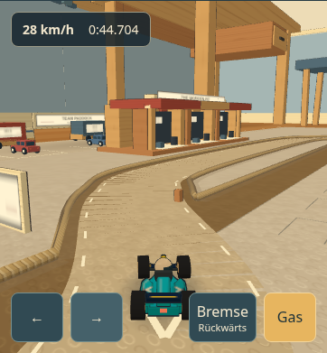
Boxeneinfahrt
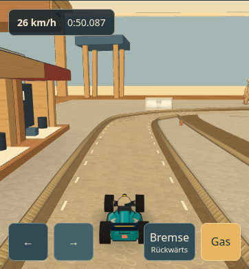
Boxengasse
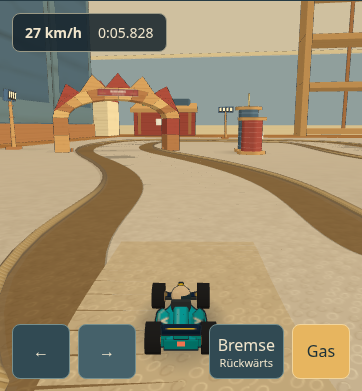
Boxenausfahrt